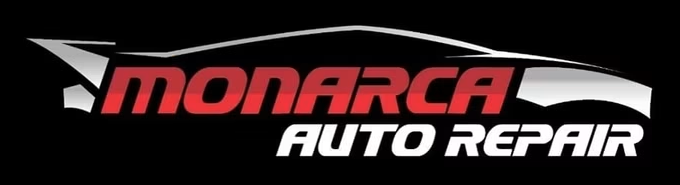

Diagnostics & repairs
Finds the real problem, even after other shops couldn't.
Ask about diagnostics & repairs →
Monarca Auto RepairHonest, bilingual auto repair in Cleveland: Alex explains every repair step by step, fixes what other shops couldn't and keeps prices fair.
Finds the real problem, even after other shops couldn't.
Ask about diagnostics & repairs →Brake jobs and A/C repair at fair prices.
Ask about brakes & a/c →Pickup and tow-in available, per customers.
Ask about towing to the shop →Alex showed me the parts the dealership said needed replacing and told me they still worked fine. The most trustworthy mechanic I've worked with.
He towed my car to the shop, diagnosed it quickly and had it repaired in a few days at a reasonable price.
853 County Rd 5011, Cleveland, TX 77327
Call nowGet directionsEmail monarca32124@gmail.comFacebook page| Mon–Fri | 8 AM–5:30 PM |
|---|---|
| Saturday | 8 AM–5 PM |
| Sunday | Closed |